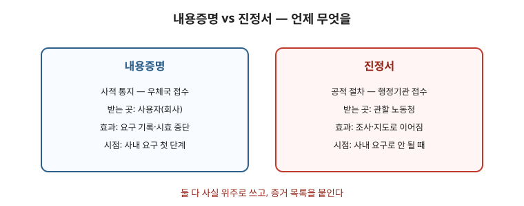

실업급여(구직급여)는 이직 사유를 어떻게 신고하느냐로 갈립니다. 회사가 적어 준 사유와 실제 사실이 다르면 그 차이를 다퉈야 합니다. 이 글은 수급 틀부터 이직확인서 정정·신청·실업인정·자주 걸리는 지점까지 순서대로 정리한 안내입니다. 요건·금액은 가입 기간과 사유에 따라 달라지므로 마지막 점검표까지 읽고 고용보험 누리집·고용센터 상담으로 확인하세요.

한눈에 보는 표
| 단계 | 핵심 | 기록할 것 |
|---|---|---|
| 수급 틀 | 피보험단위기간 + 비자발적 이직 + 재취업 의사·능력 | 가입 기간·이직 사유 메모 |
| 이직확인서 | 회사 제출 내용과 사실 대조 | 정정 요구 문자·메일 보관 |
| 신청·인정 | 기한 내 신청 + 주기별 실업인정 | 구직활동·소득신고 기록 |
1. 수급 자격의 큰 틀
- 이직 전 일정 기간(피보험단위기간) 동안 고용보험에 가입된 기간이 있어야 하고, 이직 사유가 비자발적이어야 하며, 재취업 의사와 능력이 있어야 합니다.
- 권고사직·계약만료·해고처럼 비자발적 사유가 인정됩니다. 다만 자발적 사직으로 신고돼 있으면 정정 절차가 필요합니다.
- 질병·간병·임금체불·괴롭힘 같은 사유로 그만둔 경우에도 사유를 구체적으로 적으면 인정될 여지가 있습니다. 진단서·체불 기록·신고 기록을 함께 내세요.
2. 이직확인서가 중요하다 — 사실과 다르면 정정
- 회사가 제출하는 이직확인서에 사유와 기간이 적힙니다. 여기 적힌 내용이 다툼의 출발점이 됩니다. 고용보험 누리집에서 본인 내용을 먼저 확인하세요.
- 사실과 다르게 적혀 있으면 회사에 정정을 요구하세요. 요구는 문자·메일로 남기고, 응하지 않으면 고용센터에 알리세요. 퇴사 전에 사유를 미리 확인해 두면 나중에 바로잡기 쉽습니다.
- “사직서”를 쓰라는 압박을 받으면 사유란을 비워두지 말고 실제 사유(권고·체불·질병 등)를 적으세요. 백지·허위 사직서는 나중에 정정이 어렵습니다.
3. 신청과 실업 인정 — 기한이 생명
- 이직 후 정해진 기간 안에 고용센터를 방문해 수급 자격을 신청하세요. 늦으면 그만큼 받지 못합니다. 신분증·이직확인·통장 등 준비물을 미리 확인하세요.
- 이후에는 지정된 주기마다 실업 인정을 받아야 합니다. 구직 활동 내용을 성실히 기재하지 않으면 인정이 제한될 수 있습니다.
- 취업·아르바이트로 소득이 생기면 반드시 신고하세요. 미신고는 부정수급으로 이어져 반환·제재 대상이 됩니다.
4. 자주 걸리는 지점
- 권고사직을 사직으로 처리하려는 요구가 있습니다. 서면으로 사직서를 내라는 요구를 받으면 내용을 확인하고, 사유를 명확히 적으세요.
- 합의퇴직으로 처리하면 수급이 어려워질 수 있습니다. 합의 조건에 실업급여 문제를 포함해 확인하고, 합의서에 사유를 명시하세요.
- 실업급여를 받는 동안 조기 재취업을 하면 조기재취업수당을 검토할 수 있습니다. 요건(남은 소정급여일수 등)을 고용센터에서 확인하세요.
자주 틀리는 3가지
- “자진퇴사면 무조건 안 된다” — 체불·질병 등 정당한 사유가 있으면 인정될 여지가 있습니다.
- “회사가 써준 사유가 최종” — 사실과 다르면 정정을 요구하고 고용센터에 알릴 수 있습니다.
- “알바비는 신고 안 해도 된다” — 소득 발생은 신고 대상입니다. 미신고는 부정수급입니다.
현장 체크리스트
- □ 이직 사유를 실제 사실대로 적었는가
- □ 이직확인서 내용을 본인이 확인했는가
- □ 정정 요구를 문서로 남겼는가
- □ 기한 내 수급 신청을 했는가
- □ 구직활동·소득신고를 매회 기록했는가
자주 묻는 질문
- Q. 권고사직인데 사직으로 돼 있습니다. — A. 회사에 정정을 요구하고, 문자·메일 기록을 남기세요. 응하지 않으면 고용센터에 알리세요.
- Q. 체불 때문에 그만뒀습니다. — A. 체불 기록(명세서·입금내역·진정서)을 모아 사유로 제출하세요. 관련 글 임금체불 대응을 참고하세요.
- Q. 단기 알바를 해도 되나요? — A. 소득 발생 시 신고하면 됩니다. 미신고가 문제입니다.
- Q. 빨리 취업하면 손해인가요? — A. 조기재취업수당 요건을 확인하세요. 남은 일수에 따라 별도 수당이 있을 수 있습니다.
근거와 원문
이 글은 2026-09-19 기준 일반 안내입니다. 수급 요건과 급여 수준은 개인의 이직 사유·가입 기간에 따라 달라지므로 고용센터 상담을 권합니다. 법률 자문이 아닙니다.